A tour of the Apache Arrow ecosystem for the R community
slides.djnavarro.net/arrow-latinr-2022
Danielle Navarro
Sydney, Australia
There is a bridge here
Voltron Data
Bridging languages, hardware, and people
What is Apache Arrow?
A multi-language toolbox
For accelerated data interchange
And in-memory processing
Accelerating data interchange
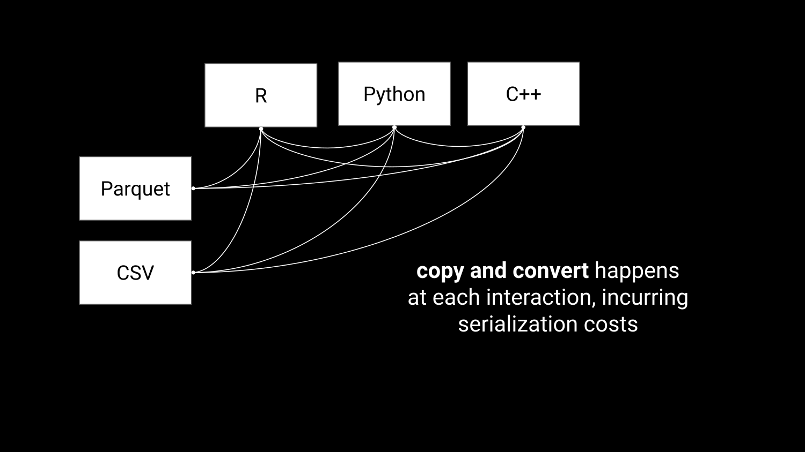Accelerating data interchange
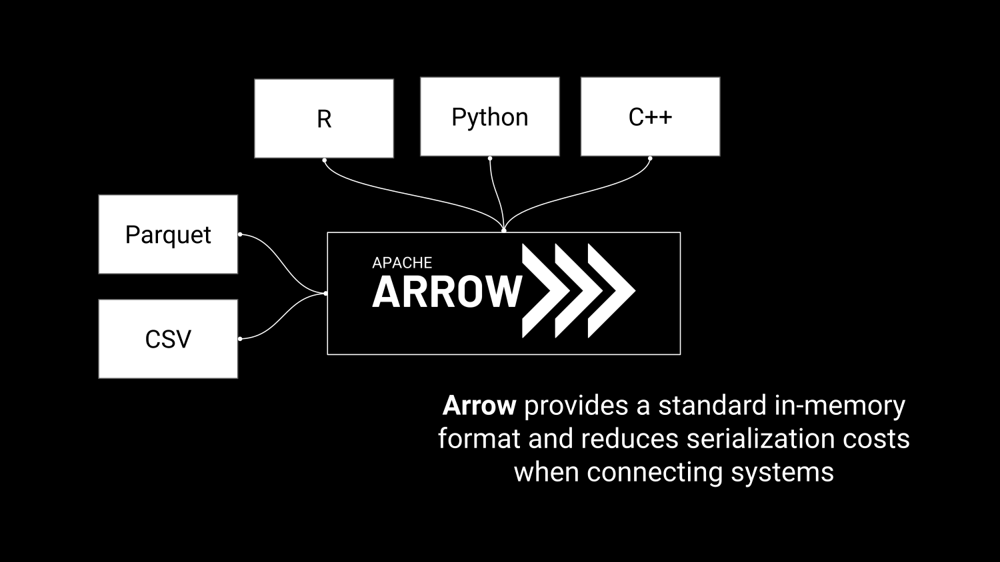Efficient in-memory processing
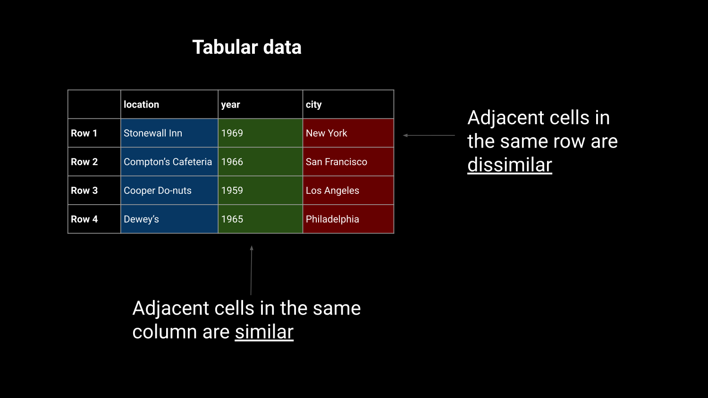Efficient in-memory processing
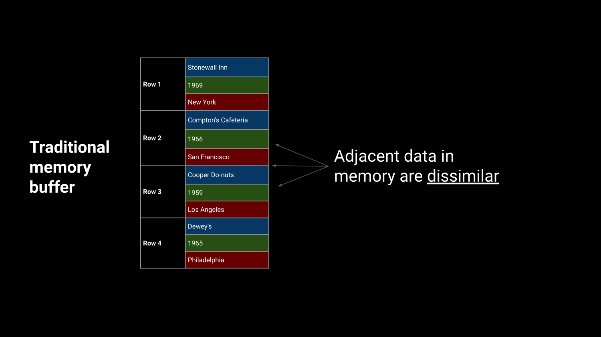Efficient in-memory processing
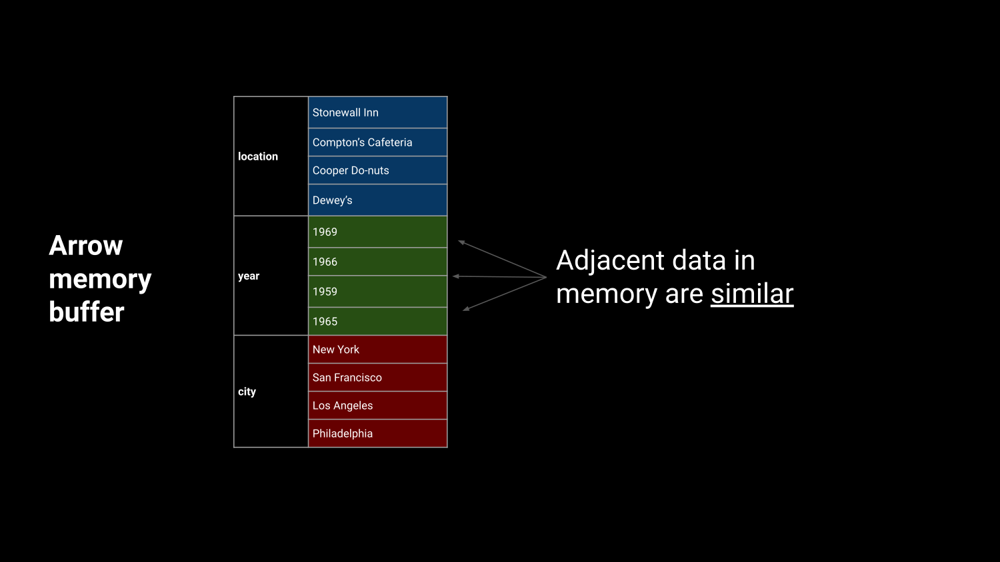Efficient in-memory processing
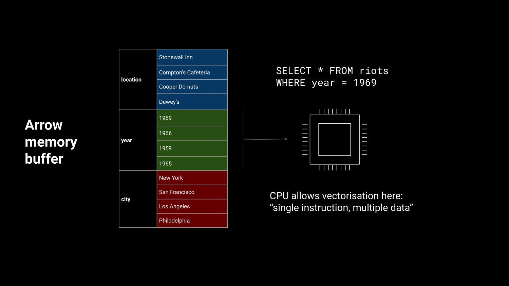R in the Arrow Ecosystem
R in the Arrow Ecosystem
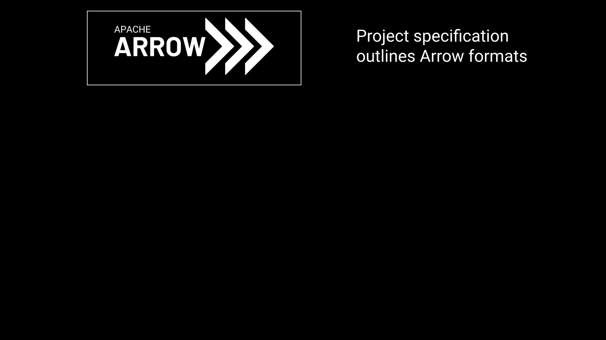R in the Arrow Ecosystem
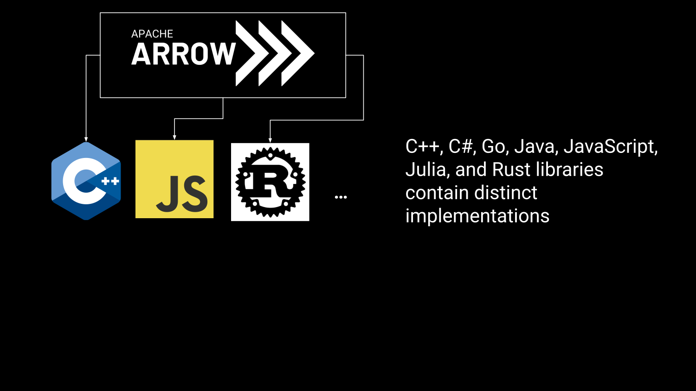R in the Arrow Ecosystem
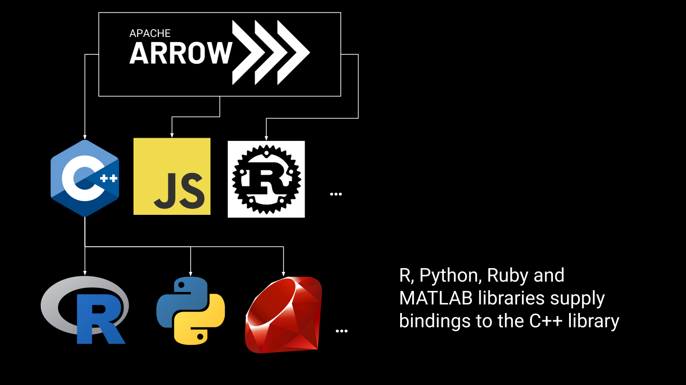Arrow in the R Ecosystem
Arrow in the R Ecosystem
- Read/write: multi-file Parquet data, csv, etc
- Compute engine: Analyze Arrow data with dplyr syntax
- Larger than memory data: Dataset interface
- Remote storage: Amazon S3, Google cloud
- Streaming Arrow data over networks with Arrow Flight
- And more…
Arrow in the R Ecosystem
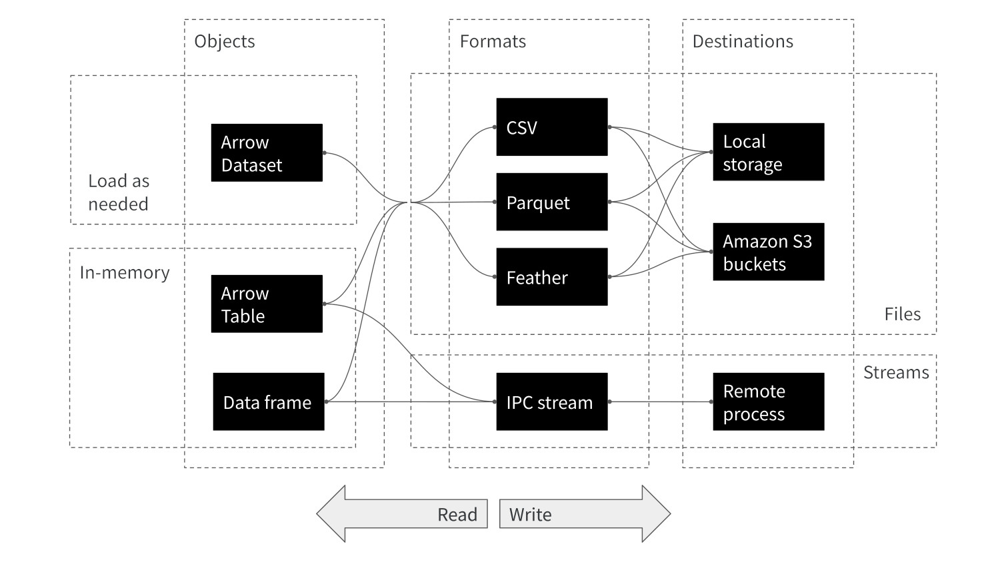Arrow in the R Ecosystem
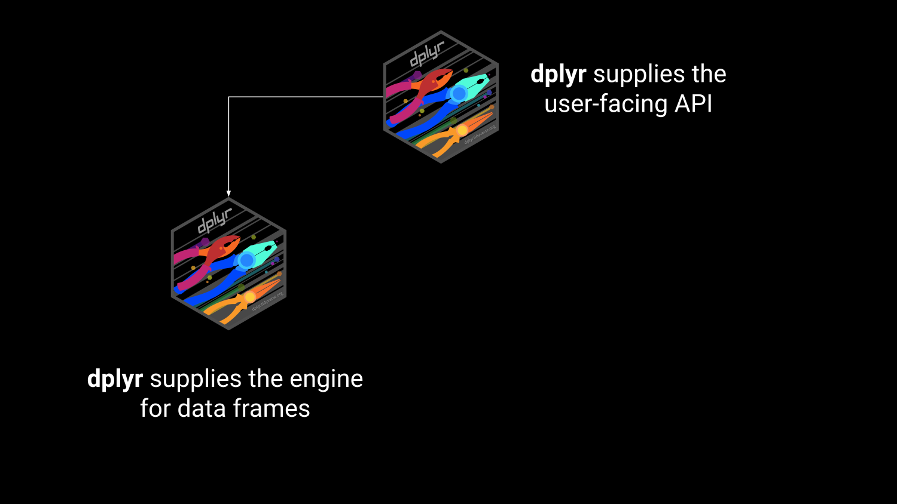Arrow in the R Ecosystem
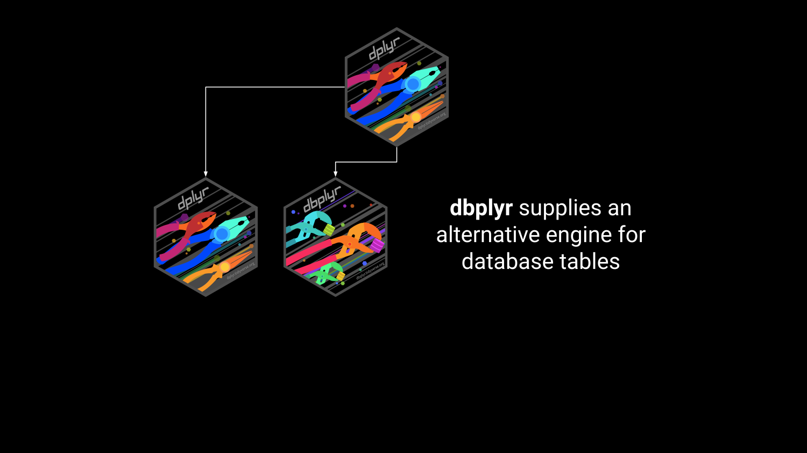Arrow in the R Ecosystem
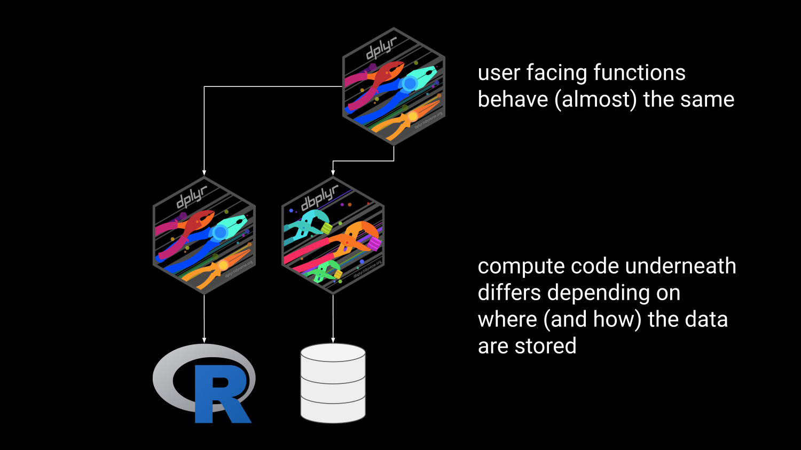Arrow in the R Ecosystem
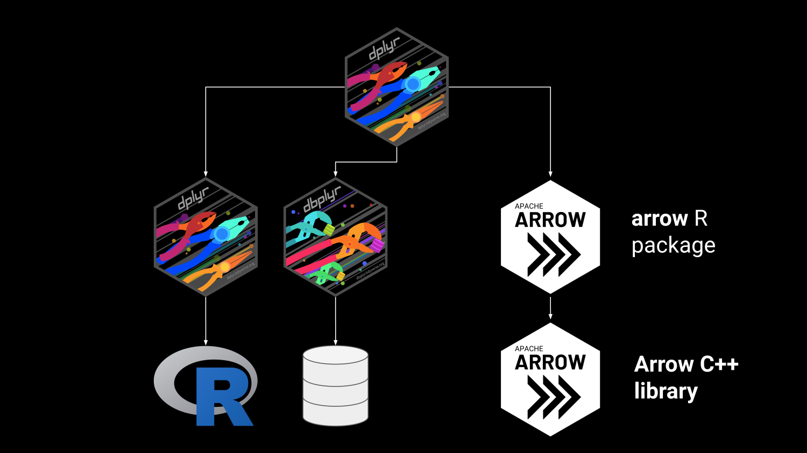Packages for this talk
- Loading
tidyversemostly fordplyr - Loading
reticulateso we can call Python from R - Loading
tictocto report timing - Loading
arrowfor… well, Arrow!
Everyday data tasks with Arrow
Read a CSV to a data frame
Rows: 20,000,000
Columns: 5
$ junk01 <dbl> 2.10041347, 1.22908479, -0.38720793, -0.56576950, -0.39765…
$ junk02 <dbl> -0.87634488, 0.87641325, 0.48868847, -0.71184308, -0.08265…
$ junk03 <dbl> 0.83750696, -1.66103399, 0.23180229, 0.90104670, -0.527332…
$ junk04 <dbl> -0.25699051, 0.62960958, -0.63175815, 0.94218371, -1.73777…
$ junk05 <dbl> 0.51167231, 0.61309036, -1.22194293, 0.97004652, -1.867794…2.04 sec elapsedRead a CSV to an Arrow table
Table
20,000,000 rows x 5 columns
$ junk01 <double> 2.10041347, 1.22908479, -0.38720793, -0.56576950, -0.3976…
$ junk02 <double> -0.87634488, 0.87641325, 0.48868847, -0.71184308, -0.0826…
$ junk03 <double> 0.83750696, -1.66103399, 0.23180229, 0.90104670, -0.52733…
$ junk04 <double> -0.25699051, 0.62960958, -0.63175815, 0.94218371, -1.7377…
$ junk05 <double> 0.51167231, 0.61309036, -1.22194293, 0.97004652, -1.86779…1.13 sec elapsedRead a Parquet file
Table
20,000,000 rows x 5 columns
$ junk01 <double> 2.10041347, 1.22908479, -0.38720793, -0.56576950, -0.3976…
$ junk02 <double> -0.87634488, 0.87641325, 0.48868847, -0.71184308, -0.0826…
$ junk03 <double> 0.83750696, -1.66103399, 0.23180229, 0.90104670, -0.52733…
$ junk04 <double> -0.25699051, 0.62960958, -0.63175815, 0.94218371, -1.7377…
$ junk05 <double> 0.51167231, 0.61309036, -1.22194293, 0.97004652, -1.86779…0.152 sec elapsedOpen a multi-file dataset
TO DO
Use dplyr syntax with Arrow data
TO DO
Case study 1: Visualizing a billion rows of data in less time than it takes to make a cup of coffee
New York, USA
Sometimes the data don’t quite fit
Open the NYC taxi data
- NYC taxi data is a table with about 1.7B rows
- Information on taxi trips in NYC from 2009 to 2022
- Far too big to fit in memory!
- Connect using
open_dataset()
Glimpse the NYC taxi data
FileSystemDataset with 158 Parquet files
1,672,590,319 rows x 24 columns
$ vendor_name <string> "VTS", "VTS", "VTS", "DDS", "DDS", "DDS"…
$ pickup_datetime <timestamp[ms]> 2009-01-04 13:52:00, 2009-01-04 14:31:00…
$ dropoff_datetime <timestamp[ms]> 2009-01-04 14:02:00, 2009-01-04 14:38:00…
$ passenger_count <int64> 1, 3, 5, 1, 1, 2, 1, 1, 1, 1, 1, 1, 2, 2…
$ trip_distance <double> 2.63, 4.55, 10.35, 5.00, 0.40, 1.20, 0.4…
$ pickup_longitude <double> -73.99196, -73.98210, -74.00259, -73.974…
$ pickup_latitude <double> 40.72157, 40.73629, 40.73975, 40.79095, …
$ rate_code <string> NA, NA, NA, NA, NA, NA, NA, NA, NA, NA, …
$ store_and_fwd <string> NA, NA, NA, NA, NA, NA, NA, NA, NA, NA, …
$ dropoff_longitude <double> -73.99380, -73.95585, -73.86998, -73.996…
$ dropoff_latitude <double> 40.69592, 40.76803, 40.77023, 40.73185, …
$ payment_type <string> "Cash", "Credit card", "Credit card", "C…
$ fare_amount <double> 8.9, 12.1, 23.7, 14.9, 3.7, 6.1, 5.7, 6.…
$ extra <double> 0.5, 0.5, 0.0, 0.5, 0.0, 0.5, 0.0, 0.5, …
$ mta_tax <double> NA, NA, NA, NA, NA, NA, NA, NA, NA, NA, …
$ tip_amount <double> 0.00, 2.00, 4.74, 3.05, 0.00, 0.00, 1.00…
$ tolls_amount <double> 0, 0, 0, 0, 0, 0, 0, 0, 0, 0, 0, 0, 0, 0…
$ total_amount <double> 9.40, 14.60, 28.44, 18.45, 3.70, 6.60, 6…
$ improvement_surcharge <double> NA, NA, NA, NA, NA, NA, NA, NA, NA, NA, …
$ congestion_surcharge <double> NA, NA, NA, NA, NA, NA, NA, NA, NA, NA, …
$ pickup_location_id <int64> NA, NA, NA, NA, NA, NA, NA, NA, NA, NA, …
$ dropoff_location_id <int64> NA, NA, NA, NA, NA, NA, NA, NA, NA, NA, …
$ year <int32> 2009, 2009, 2009, 2009, 2009, 2009, 2009…
$ month <int32> 1, 1, 1, 1, 1, 1, 1, 1, 1, 1, 1, 1, 1, 1…Set some handy quantities
Count pickups at each image pixel
tic()
pickup <- nyc_taxi |>
filter(
!is.na(pickup_longitude) & !is.na(pickup_latitude),
pickup_longitude > x0 & pickup_longitude < x0 + span,
pickup_latitude > y0 & pickup_latitude < y0 + span
) |>
mutate(
unit_scaled_x = (pickup_longitude - x0) / span,
unit_scaled_y = (pickup_latitude - y0) / span,
x = as.integer(round(pixels * unit_scaled_x)),
y = as.integer(round(pixels * unit_scaled_y))
) |>
count(x, y, name = "pickup") |>
collect()
toc()60.942 sec elapsedGlimpse the pickup counts
Place pickup counts on a grid
tic()
grid <- expand_grid(x = 1:pixels, y = 1:pixels) |>
left_join(pickup, by = c("x", "y")) |>
mutate(pickup = replace_na(pickup, 0))
toc()10.3 sec elapsedCoerce to matrix
pickup_grid <- matrix(
data = grid$pickup,
nrow = pixels,
ncol = pixels
)
pickup_grid[2000:2009, 2000:2009] [,1] [,2] [,3] [,4] [,5] [,6] [,7] [,8] [,9] [,10]
[1,] 11 2 2 4 6 3 7 15 54 96
[2,] 5 3 3 1 5 27 47 55 74 100
[3,] 5 6 7 38 39 48 60 99 95 75
[4,] 16 37 51 45 35 61 64 67 51 18
[5,] 67 50 97 141 55 24 26 26 40 29
[6,] 65 133 56 18 11 10 659 6 4 9
[7,] 35 78 13 3 82 105 68 2 2 4
[8,] 7 7 4 3 7 25 4 2 2 3
[9,] 8 10 3 3 17 5 98 2 4 3
[10,] 8 6 8 2 19 6 1 2 3 23Visualization function
Visualization
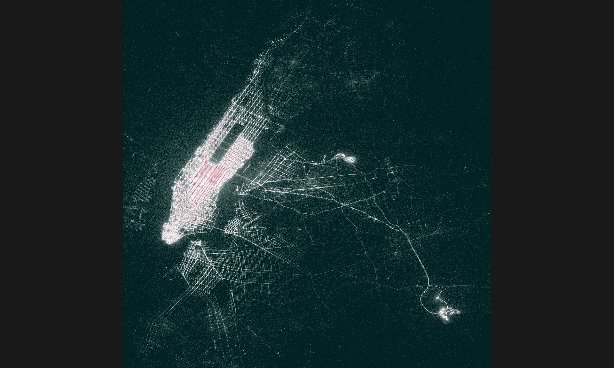Case study 2: Absurdly fast data sharing between R and Python
Córdoba, Spain
La Mezquita-Catedral is a convenient metaphor
Choose your Python environment!
My Python environments:
name python
1 base /home/danielle/miniconda3/bin/python
2 continuation /home/danielle/miniconda3/envs/continuation/bin/python
3 r-reticulate /home/danielle/miniconda3/envs/r-reticulate/bin/python
4 reptilia /home/danielle/miniconda3/envs/reptilia/bin/python
5 tf-art /home/danielle/miniconda3/envs/tf-art/bin/python
An environment with pandas and pyarrow installed:
Load as an R data frame
- Data from The Reptile Database
- Stored locally as a CSV file:
Rows: 14,930
Columns: 10
$ taxon_id <chr> "Ablepharus_alaicus", "Ablepharus_alaicus…
$ family <chr> "Scincidae", "Scincidae", "Scincidae", "S…
$ subfamily <chr> "Eugongylinae", "Eugongylinae", "Eugongyl…
$ genus <chr> "Ablepharus", "Ablepharus", "Ablepharus",…
$ subgenus <lgl> NA, NA, NA, NA, NA, NA, NA, NA, NA, NA, N…
$ specific_epithet <chr> "alaicus", "alaicus", "alaicus", "alaicus…
$ authority <chr> "ELPATJEVSKY, 1901", "ELPATJEVSKY, 1901",…
$ infraspecific_marker <chr> NA, "subsp.", "subsp.", "subsp.", NA, NA,…
$ infraspecific_epithet <chr> NA, "alaicus", "kucenkoi", "yakovlevae", …
$ infraspecific_authority <chr> NA, "ELPATJEVSKY, 1901", "NIKOLSKY, 1902"…Copy to Python panda
- Takes about a second
- Not bad, but not ideal either
Copy to Python panda
- Check that it worked
- Notice the formatting is panda-style!
taxon_id ... infraspecific_authority
0 Ablepharus_alaicus ... NA
1 Ablepharus_alaicus_alaicus ... ELPATJEVSKY, 1901
2 Ablepharus_alaicus_kucenkoi ... NIKOLSKY, 1902
3 Ablepharus_alaicus_yakovlevae ... (EREMCHENKO, 1983)
4 Ablepharus_anatolicus ... NA
... ... ... ...
14925 Zygaspis_quadrifrons ... NA
14926 Zygaspis_vandami ... NA
14927 Zygaspis_vandami_arenicola ... BROADLEY & BROADLEY, 1997
14928 Zygaspis_vandami_vandami ... (FITZSIMONS, 1930)
14929 Zygaspis_violacea ... NA
[14930 rows x 10 columns]Load as an Arrow table in R
r_taxa_arrow <- read_delim_arrow(
file = "taxa.csv",
delim = ";",
as_data_frame = FALSE
)
glimpse(r_taxa_arrow)Table
14,930 rows x 10 columns
$ taxon_id <string> "Ablepharus_alaicus", "Ablepharus_alaicu…
$ family <string> "Scincidae", "Scincidae", "Scincidae", "…
$ subfamily <string> "Eugongylinae", "Eugongylinae", "Eugongy…
$ genus <string> "Ablepharus", "Ablepharus", "Ablepharus"…
$ subgenus <null> NA, NA, NA, NA, NA, NA, NA, NA, NA, NA, …
$ specific_epithet <string> "alaicus", "alaicus", "alaicus", "alaicu…
$ authority <string> "ELPATJEVSKY, 1901", "ELPATJEVSKY, 1901"…
$ infraspecific_marker <string> NA, "subsp.", "subsp.", "subsp.", NA, NA…
$ infraspecific_epithet <string> NA, "alaicus", "kucenkoi", "yakovlevae",…
$ infraspecific_authority <string> NA, "ELPATJEVSKY, 1901", "NIKOLSKY, 1902…Pass the table to Python
- Much faster! Takes a fraction of a second
- Foreshadowing: time is constant in the size of the table
Pass the table to Python
- Check that it worked
- Notice the formatting is pyarrow-style!
pyarrow.Table
taxon_id: string
family: string
subfamily: string
genus: string
subgenus: null
specific_epithet: string
authority: string
infraspecific_marker: string
infraspecific_epithet: string
infraspecific_authority: string
----
taxon_id: [["Ablepharus_alaicus","Ablepharus_alaicus_alaicus","Ablepharus_alaicus_kucenkoi","Ablepharus_alaicus_yakovlevae","Ablepharus_anatolicus",...,"Plestiodon_egregius_onocrepis","Plestiodon_egregius_similis","Plestiodon_elegans","Plestiodon_fasciatus","Plestiodon_finitimus"],["Plestiodon_gilberti","Plestiodon_gilberti_cancellosus","Plestiodon_gilberti_gilberti","Plestiodon_gilberti_placerensis","Plestiodon_gilberti_rubricaudatus",...,"Zygaspis_quadrifrons","Zygaspis_vandami","Zygaspis_vandami_arenicola","Zygaspis_vandami_vandami","Zygaspis_violacea"]]
family: [["Scincidae","Scincidae","Scincidae","Scincidae","Scincidae",...,"Scincidae","Scincidae","Scincidae","Scincidae","Scincidae"],["Scincidae","Scincidae","Scincidae","Scincidae","Scincidae",...,"Amphisbaenidae","Amphisbaenidae","Amphisbaenidae","Amphisbaenidae","Amphisbaenidae"]]
subfamily: [["Eugongylinae","Eugongylinae","Eugongylinae","Eugongylinae","Eugongylinae",...,"Scincinae","Scincinae","Scincinae","Scincinae","Scincinae"],["Scincinae","Scincinae","Scincinae","Scincinae","Scincinae",...,null,null,null,null,null]]
genus: [["Ablepharus","Ablepharus","Ablepharus","Ablepharus","Ablepharus",...,"Plestiodon","Plestiodon","Plestiodon","Plestiodon","Plestiodon"],["Plestiodon","Plestiodon","Plestiodon","Plestiodon","Plestiodon",...,"Zygaspis","Zygaspis","Zygaspis","Zygaspis","Zygaspis"]]
subgenus: [11142 nulls,3788 nulls]
specific_epithet: [["alaicus","alaicus","alaicus","alaicus","anatolicus",...,"egregius","egregius","elegans","fasciatus","finitimus"],["gilberti","gilberti","gilberti","gilberti","gilberti",...,"quadrifrons","vandami","vandami","vandami","violacea"]]
authority: [["ELPATJEVSKY, 1901","ELPATJEVSKY, 1901","ELPATJEVSKY, 1901","ELPATJEVSKY, 1901","SCHMIDTLER, 1997",...,"BAIRD, 1858","BAIRD, 1858","(BOULENGER, 1887)","(LINNAEUS, 1758)","OKAMOTO & HIKIDA, 2012"],["(VAN DENBURGH, 1896)","(VAN DENBURGH, 1896)","(VAN DENBURGH, 1896)","(VAN DENBURGH, 1896)","(VAN DENBURGH, 1896)",...,"(PETERS, 1862)","(FITZSIMONS, 1930)","(FITZSIMONS, 1930)","(FITZSIMONS, 1930)","(PETERS, 1854)"]]
infraspecific_marker: [[null,"subsp.","subsp.","subsp.",null,...,"subsp.","subsp.",null,null,null],[null,"subsp.","subsp.","subsp.","subsp.",...,null,null,"subsp.","subsp.",null]]
infraspecific_epithet: [[null,"alaicus","kucenkoi","yakovlevae",null,...,"onocrepis","similis",null,null,null],[null,"cancellosus","gilberti","placerensis","rubricaudatus",...,null,null,"arenicola","vandami",null]]
infraspecific_authority: [[null,"ELPATJEVSKY, 1901","NIKOLSKY, 1902","(EREMCHENKO, 1983)",null,...,"(COPE, 1871)","(MCCONKEY, 1957)",null,null,null],[null,"(RODGERS & FITCH, 1947)","(VAN DENBURGH, 1896)","(RODGERS, 1944)","(TAYLOR, 1936)",...,null,null,"BROADLEY & BROADLEY, 1997","(FITZSIMONS, 1930)",null]]Data wrangling across languages
Compute from Python:
Inspect from R:
Setting up a simple benchmark test…
- Create synthetic “taxa” data with 100K to 10M rows
- Transfer from R to Python natively and as Arrow Tables
handover_time <- function(n, arrow = FALSE) {
data_in_r <- slice_sample(r_taxa, n = n, replace = TRUE)
if(arrow) data_in_r <- arrow_table(data_in_r)
tic()
data_in_python <- r_to_py(data_in_r)
t <- toc(quiet = TRUE)
return(t$toc - t$tic)
}
times <- tibble(
n = seq(100000, 10000000, length.out = 100),
data_frame = map_dbl(n, handover_time),
arrow_table = map_dbl(n, handover_time, arrow = TRUE),
)… and how long does the data handover take?
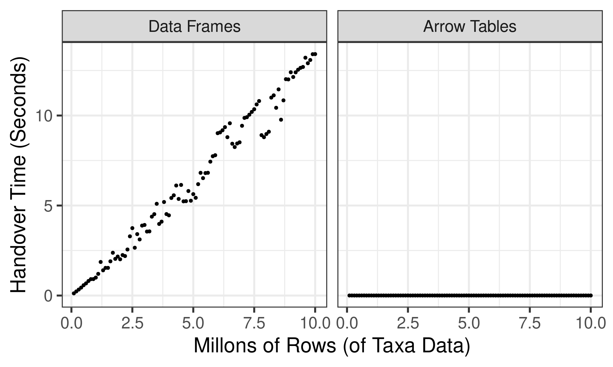Case study 3: Remote data sources
Whyalla, Australia
Remote storage is not unfamiliar to country girls
Amazon simple storage service (S3)
- Remote file storage service
- Fast, scalable, cheap
- Very handy if all you need is storage
- Analogous services via Google Cloud, Microsoft Azure
Connecting to an S3 bucket
[1] "arrow-project" "csv_reports" "nyc-taxi" [1] "nyc-taxi/year=2009" "nyc-taxi/year=2010" "nyc-taxi/year=2011"
[4] "nyc-taxi/year=2012" "nyc-taxi/year=2013" "nyc-taxi/year=2014"
[7] "nyc-taxi/year=2015" "nyc-taxi/year=2016" "nyc-taxi/year=2017"
[10] "nyc-taxi/year=2018" "nyc-taxi/year=2019" "nyc-taxi/year=2020"
[13] "nyc-taxi/year=2021" "nyc-taxi/year=2022"Open a dataset stored in an S3 bucket
Querying the remote dataset
tic()
result <- remote_taxi |>
filter(year == 2019, month == 1) |>
summarize(
all_trips = n(),
shared_trips = sum(passenger_count > 1, na.rm = TRUE)
) |>
mutate(pct_shared = shared_trips / all_trips * 100) |>
collect()
toc()30.834 sec elapsedBut what if I need a remote server?
- Sometimes a remote filesystem like S3 isn’t enough
- Sometimes you need the remote system to do computations
- If so, you may want an Arrow Flight server…
What is Arrow Flight?
- Flight is a remote procedure call (RPC) protocol
- Flight is used to stream Arrow data over a network
- Fully supported by the Arrow C++ and Python libraries
- R support is a wrapper around the Python flight library
- Related: Flight SQL and ADBC (not in this talk!)
Starting the Flight server
Uploading data from a client machine
Connect to server:
Upload data:
Check that it worked:
What happens when flight_put() is called?

Downloading data to a client machine
Table
153 rows x 6 columns
$ Ozone <int32> 41, 36, 12, 18, NA, 28, 23, 19, 8, NA, 7, 16, 11, 14, 18,…
$ Solar.R <int32> 190, 118, 149, 313, NA, NA, 299, 99, 19, 194, NA, 256, 29…
$ Wind <double> 7.4, 8.0, 12.6, 11.5, 14.3, 14.9, 8.6, 13.8, 20.1, 8.6, 6…
$ Temp <int32> 67, 72, 74, 62, 56, 66, 65, 59, 61, 69, 74, 69, 66, 68, 5…
$ Month <int32> 5, 5, 5, 5, 5, 5, 5, 5, 5, 5, 5, 5, 5, 5, 5, 5, 5, 5, 5, …
$ Day <int32> 1, 2, 3, 4, 5, 6, 7, 8, 9, 10, 11, 12, 13, 14, 15, 16, 17…
Call `print()` for full schema detailsWhat happens when flight_get() is called?

Where do I go next?
Resources
- arrow-user2022.netlify.app
- github.com/thisisnic/awesome-arrow-r
- blog.djnavarro.net/category/apache-arrow
- arrow.apache.org/docs/r
- arrow.apache.org/cookbook/r